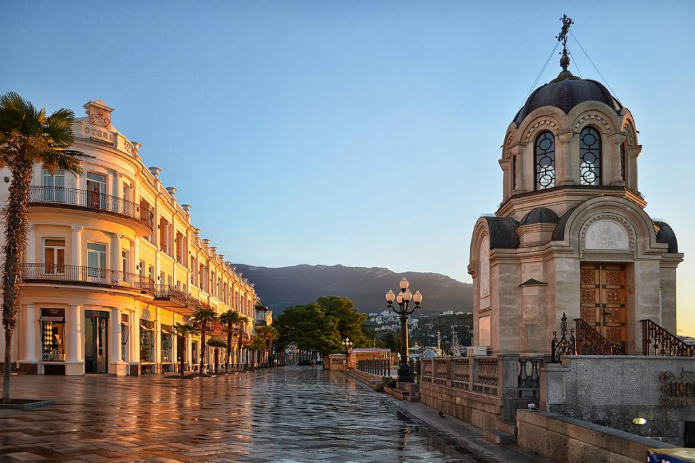
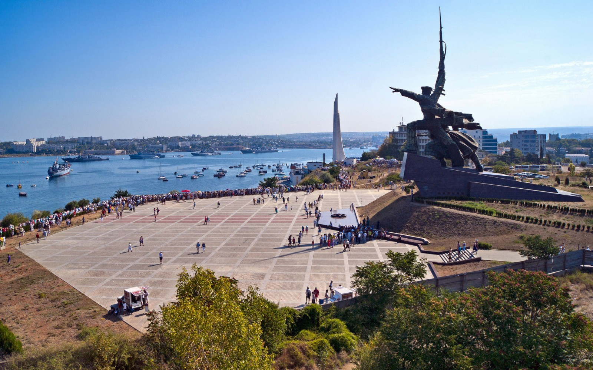
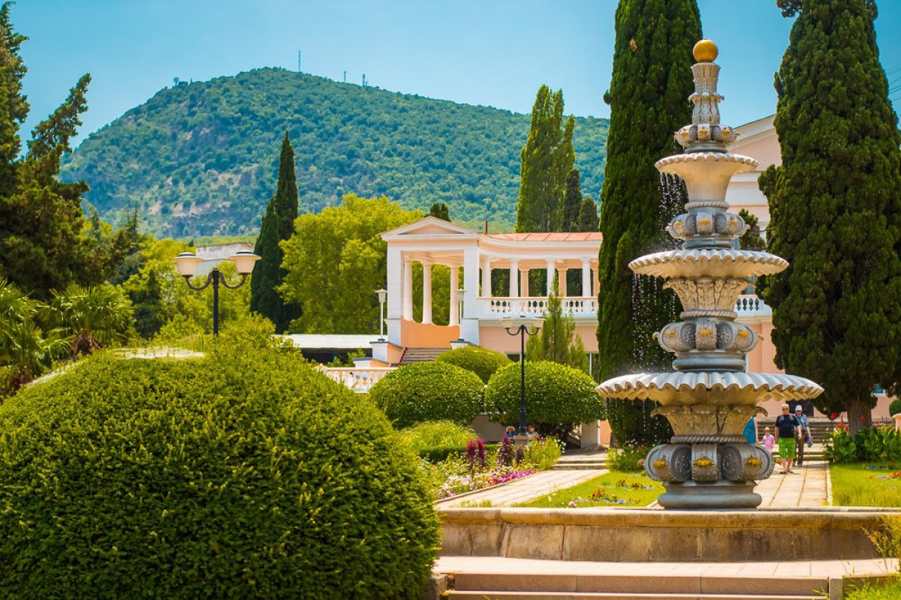
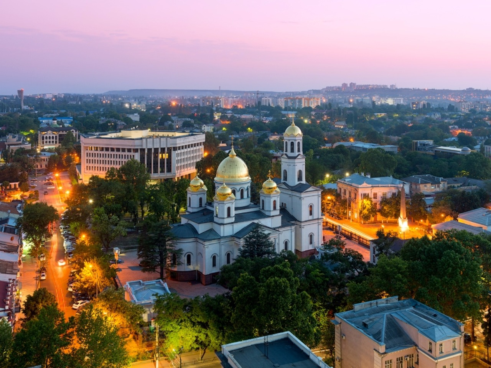

Предложение месяца!
Экскурсия по легендарному заводу «Массандра» с дегустацией марочных вин.>
- Экскурсия по головному заводу проходит по историческим маршрутам отца-основателя «Массандры», родоначальника российского виноделия — Льва Голицына и Александра Егорова, который многие годы был главным виноделом «Массандры» и создал большинство знаменитых вин.
- Гости познакомятся с этапами производства вина и классическими технологиями, а также побывают в подвалах, где вина выдерживаются в огромных вековых дубовых бочках. Сотрудники «Массандры» расскажут о здешней коллекции вин — одной из самых крупных в мире и самой богатой по разнообразию. Всего здесь около миллиона бутылок, а старейшим является Херес-де-ля-Фронтера 1775 года.
- На дегустацию будут поданы яркие представители массандровских вин — 9 образцов марочных вин «Массандры».После экскурсии по заводу у гостей будет время для посещения фирменного магазина.
Приветствуем вас!
Крым всегда был излюбленным местом отдыха российских туристов, а открытие Крымского моста сделало транспортное сообщение между полуостровом и материковой частью России еще более удобным.И если вы думаете, что отдых на местных курортах ограничится только купанием в море и прогулками по пляжу, то вы сильно ошибаетесь! Полуостров Крым отличается невиданной красотой, большим наличием исторических мест и событий, которые происходили во времена Имперской России, Второй Мировой войны и других моментов из жизни страны. Разнообразные экскурсионные программы, позволяющие познакомиться с самыми разными уголками всемирно известной здравницы, не дадут вам заскучать.
Популярные туристические города Крыма
Ялта
Ялта – жемчужина Черного моря и один из самых известных курортов Крымского полуострова.Вода здесь чистая и прозрачная, пляжи – длинные и широкие, в основном покрыты галькой. На побережье можно арендовать все, что необходимо для хорошего отдыха. Также здесь созданы все условия для занятия дайвингом и другими водными видами спорта. Плюс ко всему в городе очень развита туристическая инфраструктура – есть аквапарк, зоопарк, множество магазинов, отелей разного класса, ресторанов, развлекательных центров и т. д.
Но едут в Ялту не только за этим! По курортной столице Крыма проводится множество интересных экскурсий. Маршрут большинства из них включает в себя посещение таких всемирно известных объектов, как Ласточкино гнездо, Юсуповский и Ливадийский дворец, набережная имени Ленина, Массандровский парк и т. д.
Севастополь
В число крымских городов, которые следует посетить самостоятельно, входит и Севастополь.Несмотря на то, что его не относят к курортам по причине военно-морского статуса, здесь есть на что посмотреть: знаменитые исторические памятники, руины древнегреческого Херсонеса, живописная Балаклавская бухта, мыс Фиолент с Георгиевским монастырем и много других объектов.
Отелей в городе также немало, причем как люксовых, так и бюджетных.
Из-за присутствия порта море в Севастополе не такое чистое, как на остальных курортах. Но отдыхающих хоть отбавляй, а купальный сезон бьет все рекорды по продолжительности - море остается теплым до начала ноября.
Пляжи встречаются самые разные: одни больше подходят для детей, другие – для активного отдыха. Большинство из них расположено в заливах, служащих стоянками для морских судов.
Что любопытно, даже обзорные туры по Севастополю проходят по разным сценариям, но большинство из них включает в себя осмотр Владимирского собора, Графской пристани, набережной Корнилова, штаба Черноморского флота.
Алушта
Красивый приморский город, расположенный на южном берегу полуострова. В нем есть все для полноценного отдыха и оздоровления – песчаные и галечные пляжи, фешенебельные отели, здравницы, пансионаты, множество интересных экскурсий.С трех сторон Алушту окружают высокие горы, поэтому здесь не так ветрено, как в других районах Крыма. В окрестностях города много виноградников и сосново-буковых лесов, созданы все условия для кемпинга.
Инфраструктура курорта развита очень хорошо, а к числу самых популярных достопримечательностей можно отнести живописную набережную, фонтан «Мальчик с рыбой», белоснежную ротонду с шестью колоннами, памятник олимпийскому мишке, террариум, аквариум, крепость Алустон, комплекс «Крым в миниатюре».
Если же вы решите выехать за пределы города, то сможете ознакомиться с известными природными объектами – Птичьим островом, Долиной привидений, горой Кастель, водопадом Джур-Джур, Крымским заповедником и т. д.
Ну а неизменным лидером среди экскурсий является поездка по «следам» знаменитого Шурика. Профессиональные гиды охотно показывают камень Варлей, лестницу, с которой главный герой «Кавказской пленницы» прыгал на спину осла, орех Никулина и другие любимые всеми места.
Симферополь
Для большинства туристов знакомство с Республикой Крым начинается именно с Симферополя. И в этом нет ничего удивительного, ведь он является не только географическим, но и транспортным центром полуострова. Город отличается необычным сочетанием ландшафтов (степи и горы) и большим количеством парков, музеев, театров, храмов, университетов.Прогуливаясь по его улицам, вы увидите фонтаны, развлекательные зоны, набережную р. Салгир, памятник вежливым людям и Екатерине II, Троицкий монастырь и ботанический сад.
Любителей истории наверняка заинтересует экскурсия по величественному железнодорожному вокзалу, украшенному часовой башней и аркадной галереей.
Понравится в крымской столице и школьникам – их ждут экскурсии в музей шоколада и научный центр «Знаниум».
Самым же древним историческим памятником Симферополя считают Неаполь Скифский, руины которого расположены на на возвышенности Петровского плато.
Частые вопросы путешественников по экскурсиям в Крыму
Балаклава
Графская пристань
Мыс Фиолент
Площадь Нахимова
Памятник Затопленным кораблям
Иммерсивная прогулка по Ялте
Жемчужины южного побережья Крыма
Астрономическая экскурсия «Звезды над Крымом»
Аю-Даг: пейзажи и предания Медведь-горы
Мастер-класс общения и дружбы с лошадьми
Добро пожаловать в Симферополь!
Один день в Севастополе
Секреты и красота мыса Фиолент
Винный треугольник: Балаклава, Фотисаль и Инкерман
Сокровища крымского Южнобережья